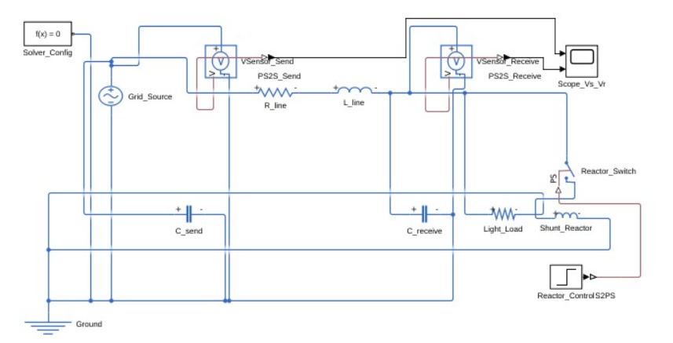

A Simulink model of a 220 kV, 200 km transmission line, built to demonstrate the Ferranti effect under light-load conditions — and a shunt reactor sized and tested to pull the overvoltage back down.
A long line's distributed shunt capacitance draws a leading charging current. At light load, that current has nowhere else to go — it flows back through the line's own series reactance and lifts the receiving-end voltage above the sending end.
| Parameter | Value |
|---|---|
| Series resistance | 0.05 Ω/km/phase |
| Series inductance | 1 mH/km/phase |
| Shunt capacitance | 0.01 µF/km/phase |
| Line length | 200 km |
| Total R / L / C | 10 Ω / 0.2 H / 2 µF |
Built entirely from a MATLAB script (Simscape Electrical Foundation
Library) rather than drawn by hand, so it's reproducible and
version-controlled — see assignment4.m
in the repo.

Source → series R–L line → receiving node, with shunt capacitances at both ends, a light load, and a switchable shunt reactor for mitigation.
Peak receiving-end voltage relative to the sending end, across all three conditions.
| Condition | V_S (kV, LL) | V_R (kV, LL) | Change |
|---|---|---|---|
| Theoretical, no load | 220.0 | 224.4 | +2.01% |
| Simulated, reactor off | 220.0 | 224.75 | +2.16% |
| Simulated, reactor on | 220.0 | 216.76 | −1.46% |
A ~30.4 MVAr shunt reactor, switched in at t = 0.1s, absorbs the line's own charging current and pulls the receiving-end voltage back down — slightly past the sending-end value, suggesting the reactor is a touch oversized for this particular load level. In practice, reactors are switched in discrete banks to allow finer tuning across varying loads.